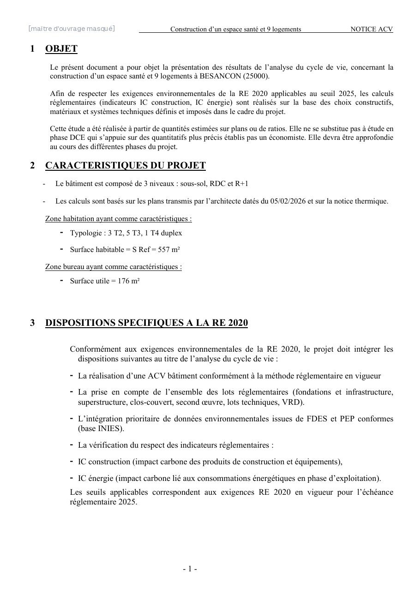
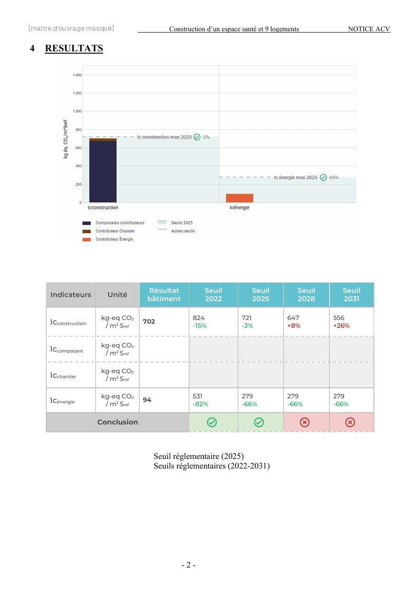

Tous les lots pris en compte
L'ACV recense les produits et équipements de tous les lots du bâtiment, avec leurs données environnementales issues de la base INIES (FDES pour les produits, PEP pour les équipements), puis calcule l'impact carbone de la construction et des consommations d'énergie sur 50 ans.


Conforme au seuil 2025
| Indicateur (kg CO₂ éq/m²) | Résultat | Seuil 2025 | Seuil 2028 | Seuil 2031 |
|---|---|---|---|---|
| Ic construction (matériaux et chantier) | 702 | 721 · conforme | 647 | 556 |
| Ic énergie (consommations sur 50 ans) | 94 | 279 · conforme | 279 | 279 |
Le projet respecte le seuil 2025 avec une marge d'environ 3 % sur la construction. L'étude montre aussi l'écart à combler pour les seuils 2028 et 2031, utile pour arbitrer entre matériaux sur les prochaines opérations.
Document réel, reproduit avec l'accord du bureau d'études Gallet. Maître d'ouvrage et adresse masqués.